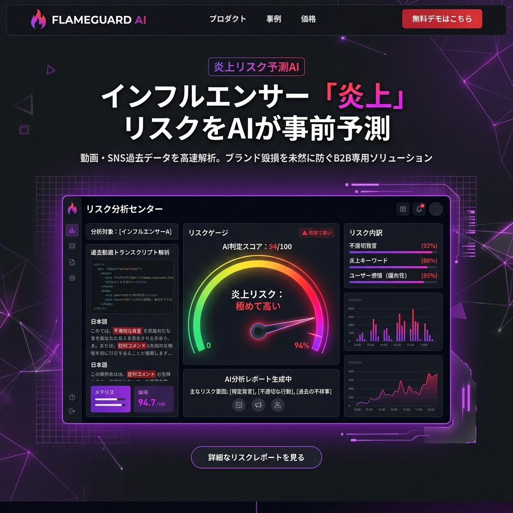

「ドタキャン」という
理不尽を、システムで防衛する。
飲食店やホテルを悩ませるノーショー（無断キャンセル）。CANCEL-SHIELDは、予約経路と過去の信用スコアをAIが解析し、キャンセルリスクを事前に検知・ブロックする次世代の予約防衛SaaSです。

「仕方ない」で済まされてきた巨大な損失
予約時間の15分前になっても来ない。電話も繋がらない。飲食店にとって、ノーショーは単なる機会損失ではなく、原価と人件費の直接的な「負債」です。これまで業界全体が泣き寝入りしてきたこの理不尽な構造を、CANCEL-SHIELDがテクノロジーで根本から破壊します。
悪質な予約を見抜く、予測防衛アルゴリズム
電話番号・IPブラックリスト共有
全国数万店舗のデータベースから、過去に無断キャンセルを繰り返した電話番号やIPアドレスからのウェブ予約を瞬時に検知し、ブロックします。
AIリスク・スコアリング
「繁忙期の金曜夜に、一度も来店履歴のない新規客が、ネットから10名で予約」。このような高リスクなパターンをAIが検知し、自動で確認のアラートを発動します。
動的デポジット（事前決済）要求
AIがキャンセルリスクが高いと判定した場合のみ、自動でSMSを送信し、予約確定のためのデポジット（一部事前決済）を要求するダイナミック・コントラクト機能。
善良な常連客には「一切の摩擦なし」
すべてのお客様にクレジットカードの事前登録を求めれば、ノーショーは防げますが、同時に予約のハードルも上がり客離れを引き起こします。CANCEL-SHIELDは「リスクの高い予約」のみを精密にターゲティングするため、優良な常連客の予約体験を一切損ないません。
万が一の時の「空席即時マッチング」
それでも直前キャンセルが発生した場合。システムが即座に近隣の「キャンセル待ち」ユーザーや、提携するグルメアプリにプッシュ通知を送信し、割引価格で空席を瞬時に埋めるリカバリー機能が作動します。
Case Study | 都内の高級鮨店
客単価3万円、1日3組限定の鮨店。月に1回のノーショーが死活問題でした。CANCEL-SHIELD導入後、同業他社でキャンセル歴のあるユーザーからの予約をブロック。さらに直前キャンセル時には空席マッチングが機能し、導入後半年間でノーショーによる損害額を完全にゼロにしました。
「信用」が可視化されるレストラン経済へ
私たちが創るのは、単なるブロックツールではありません。お客様とお店の間に「透明な信用」を築き、ホスピタリティ産業が本来の「おもてなし」にだけ集中できる世界です。